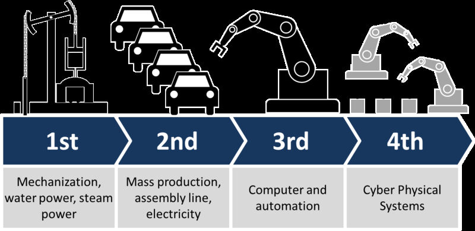
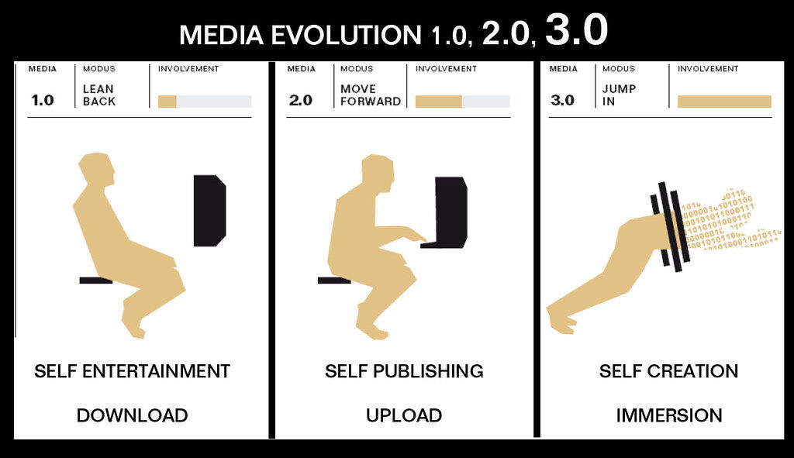
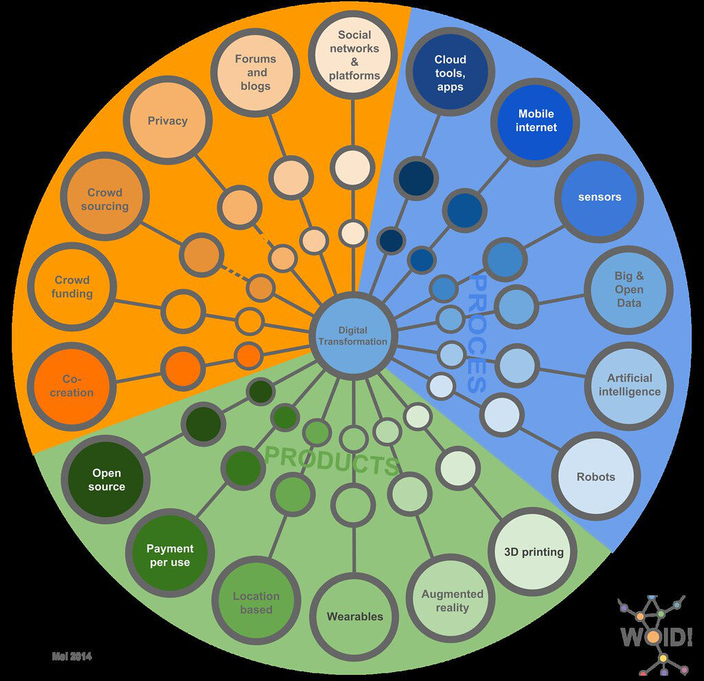

Trainees Edition
Trainers Edition
Trainees Edition
Trainers Edition
MODUL 9: SPREMINJAJOČE SE MEDIJSKO OKOLJE
Opis modula
Glavni namen tega modula je predstaviti pregled digitalne revolucije in novih medijskih orodij ter učinke tega novega ekosistema na ljudi. Sekundarni namen je usmerjati izvajalce usposabljanja, ki želijo vsebino tega modula uporabiti pri usposabljanju svojih udeležencev. Sposobnost razumevanja digitalne preobrazbe, s katero se soočajo družbe, pomaga tudi pri ocenjevanju novih vlog ljudi v spreminjajočem se medijskem okolju.
S temi cilji ta modul zajema pomen in kratko zgodovino digitalne revolucije, opredelitev in značilnosti novih medijev ter učinke digitalne preobrazbe na ljudi in družbe.
Udeleženci, ki bodo uspešno zaključili ta modul, bodo znali:
- razumeti digitalno revolucijo
- navesti primere novih medijskih platform
- razumeti značilnosti novih medijev
- razumeti učinke digitalne preobrazbe
Additionally, trainers who successfully complete this Module, will be able to demonstrate an understanding of how to teach the definition and effects of digital revolution and changing the new media environment.
Poleg tega bodo predavatelji, ki bodo uspešno zaključili ta modul, znali pokazati razumevanje, kako poučevati opredelitev in učinke digitalne revolucije ter spreminjanje okolja novih medijev.
Struktura modula
Ta modul je sestavljen iz naslednjih delov:
- Opis modula (cilji, opis vsebine in učni rezultati)
- Struktura modula
- Smernice za udeležence usposabljanja
- Smernice za izvajalce usposabljanja (kako se pripraviti, metode za uporabo in nasveti za izvajalce usposabljanja)
- Guidelines for Trainers (how to get prepared, methods to use and tips for trainers)
- Vsebina (študijsko gradivo in vaje)
- Kviz
- Viri (reference in priporočeni viri ter videoposnetki)
Glavni cilji modula, opis vsebine in učni rezultati so pojasnjeni v delu Opis modula. Smernice za udeležence usposabljanja vključujejo navodila in predloge za udeležence izobraževanja. Smernice za izvajalce usposabljanja vodijo izvajalce usposabljanja skozi različne faze usposabljanja in vsebujejo nasvete, ki bi lahko bili koristni pri poučevanju predmeta. Vsebina vključuje vsa študijska gradiva in vaje, povezane z vsebino. Kviz vključuje vprašanja z več možnostmi izbire in/ali resnična/nepravilna vprašanja, s katerimi lahko udeleženci usposabljanja preverijo svoj napredek. Viri vsebujejo dve komponenti: reference in priporočene vire za nadaljnje branje in študij. Reference so seznam virov, navedenih v vsebinskem delu. Priporočeni viri so sestavljeni iz seznama dodatnih virov in videoposnetkov, ki jih priporočamo za branje in gledanje, da bi se naučili več o temi.
Smernice za udeležence usposabljanja
Od udeležencev izobraževanja se pričakuje, da bodo prebrali besedilo, si ogledali priporočene videoposnetke in izvedli vaje. Za dodatne informacije lahko poiščejo predlagane vire. Po končanem študiju vsebine učencem priporočamo, da opravijo kviz za oceno svojega napredka. Po potrebi lahko ponovno pregledajo študijsko gradivo.
Guidelines for Trainers
Guidelines for trainers includes suggestions and tips for trainers about how to use the content of this Module to train people on the changing media environment and its effects.
Getting Prepared
Preparing a presentation (PowerPoint/Prezi/Canva) which is enriched with images and factual information (evidence) is strongly suggested. Presenting more relevant examples of new media for a specific age or interest group helps them to illustrate the content more clearly.
Getting Started
A short Kviz (3 to 5 questions) in Kahoot or questions with Mentimeter can be used at the beginning for engaging participants in the topic. It can be used as a motivation tool as well as a tool to check trainees’ existing knowledge and awareness about the subject.
Methods to Use
Various teaching methods can be used in combination during the training. Such as:
- Lecturing
- Discussion
- Group work
- Self reflection
Tips for Trainers
Warming-up
An effective way of involving participants and setting common expectations about what they will learn is to ask a few preliminary questions on the subject. For instance you can ask trainees if they feel any sharp changes in their information or media consumption environments and if any, ask them to describe their effects on them.
Presenting the Objective of the Lesson
The objective of the lesson should be made clear (which is to develop an understanding of digital revolution, new media platforms and their characteristics, the effects of digital transformation). Following the warming-up questions it will be easier to clarify the objectives.
Presenting the Lesson Content
While presenting the content make sure to interact with the trainees and encourage them for active participation.
- Before providing an overview of the digital revolution, ask participants to elaborate on it.
- Before providing an overview of the new media environment and its characteristics, ask participants to elaborate on it.
- While presenting the effects of changing media environment, encourage the participants to think and discuss their experiences.
Concluding
Make a short summary of the lesson and ask a couple of questions which underline the most important messages you planned to give.
- Ask trainees whether being aware of the new media environment raise their awareness towards news related issues
After the discussions make sure that trainees understand that the changing media environment affects various aspects of human lives and is a game changer for the societies.
Vsebina: Spreminjajoče se medijsko okolje
Uvod: Digitalna revolucija
Svet doživlja drastično preobrazbo, ki spreminja naš način življenja, dela in razmišljanja (Bello, Blowers, Schneegans in Straza, 2021, str. 3), kar je posledica medijske in tehnološke revolucije, ki se je zgodila v zadnjih 50 letih.
Do danes so transformacije, ki prevladujejo v civilni zgodovini, na splošno razvrščene na naslednji način (Inigo, Siavash & Mika, 2017; Schwab, 2016):
- 1. industrijska revolucija (19. stoletje): parna, vodna in mehanska proizvodnja.
- 2. industrijska revolucija (20. stoletje): delitev dela, elektrika in množična proizvodnja.
- 3. industrijska revolucija (70. leta 20. stoletja): elektrika, informacijske in komunikacijske tehnologije ter avtomatizirana proizvodnja.
"Četrta industrijska revolucija napoveduje vrsto družbenih, političnih, kulturnih in gospodarskih preobratov, ki se bodo odvijali v 21. stoletju. Četrta industrijska revolucija, ki temelji na široki dostopnosti digitalnih tehnologij, ki so bile rezultat tretje industrijske ali digitalne revolucije, bo v veliki meri temeljila na zbliževanju digitalnih, bioloških in fizikalnih inovacij. [...] Še pomembneje pa je, da bodo to revolucijo usmerjale odločitve, ki jih ljudje sprejemajo danes: svet čez 50 do 100 let bo v veliki meri odvisen od tega, kako bomo razmišljali o teh močnih novih tehnologijah, vlagali vanje in jih uporabljali." (Vir: Schwab, 2021) Danes se z razširjenostjo digitalnih tehnologij in nastajajočih prebojnih tehnologij, kot so biotehnologija, nanotehnologija, umetna inteligenca, robotika, internet stvari (IoT), tridimenzionalno (3D) tiskanje in kvantno računalništvo, ta tehnološka in družbena preobrazba povezuje s "4. industrijsko revolucijo1" (ali industrijo 4.0). Te tehnologije je mogoče opisati kot prelomne inovacije, saj motijo vse panoge v svetovnem gospodarstvu in vodijo v preoblikovanje celotnih sistemov proizvodnje, upravljanja in vodenja (Knell, 2021, str. 10-11).1Četrto industrijsko revolucijo je leta 2016 poimenoval Klaus Schwab, ustanovitelj in izvršni predsednik Svetovnega gospodarskega foruma (angl. World Economic Forum oz. WEF) (Lavopa in Delera, 2021).
Danes se z razširjenostjo digitalnih tehnologij in nastajajočih prebojnih tehnologij, kot so biotehnologija, nanotehnologija, umetna inteligenca, robotika, internet stvari (IoT), tridimenzionalno (3D) tiskanje in kvantno računalništvo, ta tehnološka in družbena preobrazba povezuje s "4. industrijsko revolucijo '' (ali industrijo 4.0). Te tehnologije je mogoče opisati kot prelomne inovacije, saj motijo vse panoge v svetovnem gospodarstvu in vodijo v preoblikovanje celotnih sistemov proizvodnje, upravljanja in vodenja (Knell, 2021, str. 10-11). V tem novem okolju se umetna inteligenca, robotika, nanotehnologija, 3D-tiskanje, genomika, biotehnologija in kognitivne znanosti vse bolj prepletajo, izboljšujejo in krepijo druga drugo (Bello, Blowers, Schneegans in Straza, 2021, str. 3). Te tehnologije tudi hitro spreminjajo način, kako ljudje ustvarjajo, izmenjujejo in razporejajo vrednost. Podobno kot prejšnje revolucije naj bi tudi četrta industrijska revolucija močno preoblikovala institucije, industrije in posameznike ter vključuje sistemske spremembe v številnih sektorjih in vidikih človeškega življenja (Schwab, 2021).

"Industry 4.0" avtorja Christoph Roser na AllAboutLean.com je licenciran pod CC BY-SA 4.0
Kaj je "novega" v "novih medijih"?
Marshall McLuhan je leta 1964 medije opisal kot "sporočilo" (McLuhan, str. 203), današnja definicija v slovarjih pa je "glavni načini, preko katerih veliko število ljudi prejema informacije in zabavo, to so televizija, radio, časopisi in internet" ("Media", n.d.). V predpismenih, starodavnih ali predtehnoloških kulturah so ljudje kot medij za izražanje ali zapis kakršnega koli sporočila uporabljali vklesane skale, jamske slike, skulpture itd. (Jabusch, 1992). Sredi 15. stoletja je Gutenberg izumil tiskarski stroj in s tem utrl pot knjigam, da so postale najpomembnejši in najobsežnejši medij za širjenje kakršnega koli sporočila, ideje ali informacije. Temu je v osemdesetih letih 20. stoletja sledila uvedba digitalnih metod tiskanja (Lister, Dovey, Giddings, Grant in Kelly, 2009, str. 17), leta 2000 pa interneta in pametnih telefonov.
"S pojavom novih komunikacijskih tehnologij se spreminja tudi teren tega bojišča. Od tiskarskega stroja Johannesa Gutenberga do telegrafa, od radia do televizije, nove tehnologije širijo informacije hitreje in dlje – na nove in dramatične načine." (Vir: Hornik, Anzalone in Spikes, 2018, str. 23)
Ko so se računalniki začeli širiti, so se večinoma uporabljali za izdelavo poslovnih ali uradnih dokumentov. Nato so računalniki začeli imeti večpredstavnostne funkcije, kot sta zvok in video. Možnost shranjevanja in/ali pregledovanja zvočnih in video datotek v računalniku je računalnike opremila z možnostmi za zabavo. Širjenje interneta je še povečalo vpliv tega novega medija. Namesto CD-jev, DVD-jev in kabelske televizije je internet postal vir glasbe za stereo sisteme in vir videa za televizorje, najprej prek računalnikov, nato pametnih telefonov. Danes se pametni telefoni in mobilne aplikacije pogosto uporabljajo za poslušanje glasbe, gledanje filmov ali digitalnih video vsebin, fotografiranje, zvočna ali video srečanja z ljudmi, brskanje po internetu in tako naprej ("Digital convergence", n.d.). Združitev zabave in tehnologije je za vedno spremenila sorodne panoge (kot so televizijsko oddajanje, izdajanje časopisov itd.) (Kipp, 2004, b. vi).
"Mobile Information Technology I Use Every Day" avtorja Steve Wilhelm je licenciran pod CC BY-NC-SA 2.0
Pojem "novi mediji" se ne nanaša nujno na določen način komuniciranja. Njegova opredelitev se zaradi hitrega razvoja tehnologije nenehno spreminja. Nekatere vrste medijev, kot je na primer časopis, so lahko tako primeri novih kot starih medijev, saj imajo lahko tako tiskano kot spletno različico. Po drugi strani pa lahko podkast ali pametni telefon v celoti štejemo med nove medije, saj nima natančnega "tradicionalnega" ustreznika. Tako lahko danes nove medije opredelimo kot "vse medije, od spletne strani, elektronske pošte ali bloga do mobilnih telefonov, pretočnih aplikacij ali katere koli z internetom povezane oblike komunikacije, ki se zagotavljajo digitalno" (Cote, 2020). Novost novih medijev izhaja iz nekaterih značilnih načinov, na katere preoblikujejo tradicionalne (starejše) medije, in načinov, na katere se tradicionalni mediji preoblikujejo, da bi bili kos izzivom novih medijev (Bolter in Grusin, 2000, str. 15).
Do konca prvega desetletja novega tisočletja je bila migracija vsebin in intelektualne lastnine med medijskimi oblikami jasno vidna. Koncept televizije so na primer izpodbijale digitalne pretočne platforme, meje med opisi delovnih mest so se zabrisale (na primer pri vzponu "državljanskega novinarja"), cilj se je premaknil od "občinstva" k "uporabnikom" in od "potrošnikov" k "proizvajalcem". Vendar je treba opozoriti, da so takšne spremembe v oblikah, produkciji, distribuciji in potrošnji medijev bolj zapletene, kot kaže nakazana delitev na "stare" in "nove" (Lister, Dovey, Giddings, Grant in Kelly, 2009, str. 9-10). Na "nove medije" je bolje gledati kot na kombinacijo naslednjega (Lister, Dovey, Giddings, Grant in Kelly, 2009, str. 12-13):
- Nove besedilne izkušnje: nove vrste besedilnih oblik, zabava, užitek in novi vzorci medijske potrošnje (kot so računalniške igre, simulacije, 3D filmi).
- Novi načini predstavljanja sveta: mediji, ki ponujajo nove možnosti predstavljanja in izkušnje na načine, ki niso vedno jasno opredeljeni (npr. potopitvena virtualna okolja, zaslonska interaktivna večpredstavnost).
- Novi odnosi med subjekti (uporabniki in potrošniki) in medijskimi tehnologijami: spremembe v uporabi vizualnih in komunikacijskih medijev v vsakdanjem življenju ter v pomenih, ki se pripisujejo medijskim tehnologijam.
- Nove izkušnje o odnosu med utelešenjem, identiteto in skupnostjo: spremembe v osebnem in družbenem doživljanju časa, prostora in kraja (na lokalni in globalni ravni), ki vplivajo na to, kako doživljamo sebe in svoje mesto v svetu.
- Nova pojmovanja odnosa biološkega telesa do tehnoloških medijev: izzivi za razlikovanje med človeškim in umetnim, naravo in tehnologijo, človeškim telesom in tehnološkimi pripomočki, realnim in virtualnim.
- Novi vzorci organizacije in proizvodnje: razsežne spremembe in integracije v medijski kulturi, industriji, gospodarstvu, dostopu, lastništvu, nadzoru in regulaciji.
Značilnosti novih medijev
Izraz "novi mediji" se običajno uporablja za tehnološke, besedilne, konvencionalne in kulturne spremembe v proizvodnji, distribuciji in uporabi medijev. Pojmi, kot so digitalni, interaktivni, hipertekstualni, virtualni, mrežni in simulirani, pridejo v ospredje pri obravnavi značilnosti novih medijev (Lister, Dovey, Giddings, Grant in Kelly, 2009, str. 13). Te značilnosti so del matrice lastnosti, zaradi katerih so novi mediji drugačni. Ni nujno, da so vse te značilnosti prisotne v vseh primerih novih medijev, v različnih kombinacijah so lahko prisotne v različnih stopnjah. Prav tako niso v celoti funkcije tehnologije in imajo kulturne, družbene in ekonomske vidike. Če na primer govorimo o konceptu virtualnosti, nimamo v mislih le sistemov z zasloni na glavi, temveč je treba upoštevati tudi načine, na katere se izkušnje o sebi in identiteti posredujejo v "virtualnem" prostoru (Lister, Dovey, Giddings, Grant in Kelly, 2009, str. 44). "Nove medije opredeljujejo vse tri značilnosti hkrati: so mediji, ki so integrirani in interaktivni ter na prelomu 20. in 21. stoletja uporabljajo tudi digitalno kodo. [...] Z uporabo te opredelitve je medije enostavno opredeliti kot stare ali nove. Na primer, tradicionalna televizija je integrirana, saj vsebuje slike, zvok in besedilo, vendar ni interaktivna in ne temelji na digitalni kodi. Stari telefon je interaktiven, vendar ni integriran, saj prenaša le govor in zvok ter ne deluje na podlagi digitalne kode." (Vir: van Dijk, J., 2006, str. 9) Van Dijk (2006, str. 6-9) razvršča značilnosti novih medijev v tri glavne koncepte, in sicer integracijo, interaktivnost in digitalno kodo. Integracijo lahko opredelimo kot konvergenco telekomunikacij, podatkovnih komunikacij in množičnih komunikacij v enem samem mediju, ki lahko poteka na eni od naslednjih ravni:
- infrastruktura (npr. različne prenosne povezave in oprema za telefonske in računalniške (podatkovne) komunikacije se lahko združijo).
- prenos (npr. internetna telefonija in spletna televizija na kabelski in satelitski televiziji).
- upravljanje: (npr. kabelsko podjetje, ki izkorišča telefonske linije, in telefonsko podjetje, ki izkorišča kabelsko televizijo).
- storitve (kombinacija informacijskih in komunikacijskih storitev na internetu).
- vrste podatkov (kombinacija zvokov, podatkov, besedila in slik).
Medtem ko prva značilnost omogoča popolno integracijo telekomunikacij in podatkovnih komunikacij, je za integracijo množičnih komunikacij v procesu konvergence pomembnejša druga značilnost, to je interaktivnost. Ker so digitalni mediji bolj interaktivni kot tradicionalni, omogočajo premik razmerja moči na stran uporabnika in povpraševanja. Interaktivnost je mogoče opredeliti v štirih razsežnostih, in sicer prostorski (možnost vzpostavitve dvostranske ali večstranske komunikacije), časovni (stopnja sinhronosti), vedenjski (zmožnost pošiljatelja in prejemnika, da kadar koli zamenjata vlogi) in miselni (delovanje in odzivanje z razumevanjem pomenov in kontekstov vseh vključenih udeležencev). Tretja značilnost, opredeljena kot digitalna koda, se nanaša na obliko nizov enic in ničel (imenovanih bajti, pri čemer je vsaka posamezna 1 ali 0 bit) za preoblikovanje ali prenos vsake informacije in komunikacije ob uporabi računalniške tehnologije. Preoblikovanje vseh medijskih vsebin (kot digitaliziranih oblik slik, zvokov, besedil in številčnih podatkov) v isto digitalno kodo pripomore k enotnosti in standardizaciji teh vsebin. Te digitalizirane oblike se ustvarjajo ne le z isto osnovno kodo, temveč tudi z istimi jeziki, kot je HTML (hypertext markup language), grafična koda za strani svetovnega spleta (www). Ta koda močno olajša izdelavo, zapisovanje in razširjanje vseh oblik informacij. S pomočjo digitalne kode je mogoče enote informacij in komunikacij (kot so besedila, slike, zvoki, avdiovizualni programi) pretvoriti v hiperpovezave elementov, ki jih je nato mogoče pretvoriti v hiperpovezave elementov, ki jih je mogoče predvideti in obdelati v vrstnem redu, kot želi bralec, gledalec ali poslušalec.

"Media 3.0" avtorja Cea. je licenciran pod CC BY 2.0
Novi mediji se včasih imenujejo tudi sodobni mediji in imajo nekatere vidike, zaradi katerih se z vidika uporabnika razlikujejo od svojih predhodnikov. Ti so: obilica vsebin in kanalov, mobilnost, interaktivnost in večmedijskost. Kot je razvidno iz doslej naštetih značilnosti, novi mediji niso tehnološki vidiki sami po sebi. Bolj poudarjajo, da ti mediji uporabnikom zagotavljajo kombinacijo kakovosti posredovanih informacij in posredovanega komuniciranja. Z drugimi besedami, današnje medijsko okolje omogoča učinkovitejši komunikacijski proces (Schejter, Ben-Harush in Tirosh 2017, str. 238).
Družbeni vidiki digitalne preobrazbe
Danes se človeško vedenje, prepričanja in odnosi spreminjajo glede na povezljivost. To vrsto "povezanosti" lahko analiziramo okoli naslednjih vprašanj (Pesce 2013, str. 430-437):
-
Hiperpovezljivost: Vsak posameznik se lahko neposredno poveže s tremi četrtinami človeštva.
-
Hiperdistribucija: Instinktivno vedenje ljudi za deljenje je močnejše kot kdaj koli prej, vendar se je razširilo prek naših glasov na skupnosti. Če to, kar rečemo, izzove tiste, s katerimi vzdržujemo odnose, se lahko naš glas sliši po vsem svetu.
-
Hiperinteligenca: Ko se v hiperdistribuciji v popolnoma hiperpovezanem okolju pojavi osrednja točka za določeno področje znanja, to lahko imenujemo hiperinteligenca (dober primer hiperinteligence je Wikipedija).
-
Hipersposobnost: Skupina hiperpovezanih posameznikov, ki se odločijo za hiperdistribucijo svojega znanja na določenem področju, lahko privede do hiperinteligence. Hiperinteligenca ni statična, saj vključenost vanjo nujno pomeni uporabo informacij, ki jih zagotavlja kjer, kadar in kakor je potrebno.

"Digital Transformation" avtorja Detlef La Grand je licenciran pod CC BY 2.0
Zlasti z nedavnim razvojem informacijskih in komunikacijskih tehnologij naj bi se zgodile resne spremembe v vsakdanjem življenju ter strukturah in odnosih, na katerih temelji, kot so občutek individualnosti, potrošnja, dinamika generacij in spolov v družinah in drugih gospodinjstvih, povezave med globalnim in lokalnim (Lister, Dovey, Giddings, Grant in Kelly, 2009, str. 7). V različnih študijah je poudarjeno, da tehnologija in digitalizacija reformirata vse, od vsakdanjega življenja do globalnih gospodarstev. Tehnologije, ki so bile v naša življenja vpeljane s 1. industrijsko revolucijo, kot sta parni stroj in elektrifikacija, so zasejale semena današnjega tehnološkega napredka (Knell, 2021, str. 10-11).
"Rezultat vsega tega je družbena preobrazba na globalni ravni. S tem ko vpliva na spodbude, pravila in norme gospodarskega življenja, spreminja način, kako komuniciramo, se učimo, zabavamo in se povezujemo med seboj ter kako se razumemo kot človeška bitja. Poleg tega občutek, da se nove tehnologije razvijajo in izvajajo vedno hitreje, vpliva na človekove identitete, skupnosti in politične strukture." (Schwab, 2021)
Digitalna revolucija je dejansko najpomembnejši razvoj na področju razširjanja informacij po Gutenbergovem tiskarskem stroju in domnevno pomeni veliko večji premik v komunikaciji med ljudmi (Clarke, 2012, str. 79). Tako kot vse prejšnje revolucije ima tudi današnje informacijsko in medijsko okolje pozitivne in negativne učinke na različne deležnike. Medtem ko so nekateri narodi zaradi te preobrazbe postali bogatejši, je bilo opaziti tudi nekatere globalne izzive zaradi nezmožnosti pravične porazdelitve teh koristi. Po drugi strani pa so se pojavila tudi nekatera tveganja, kot so grožnje kibernetski varnosti, napačne informacije, morebitna brezposelnost ali vse večja družbena in dohodkovna neenakost. Kljub vsemu, če bo mogoče sprejeti potrebne ukrepe za uskladitev skupnih človeških vrednot s tem tehnološkim razvojem, velja, da bi lahko človeštvo od četrte industrijske revolucije imelo več koristi kot kadar koli v zgodovini (Schwab, 2021).
Vaje
- Ali se lahko spomnite primerov "novih medijskih" platform, naprav, orodij itd. ki jih uporabljate v vsakdanjem življenju?
- Če upoštevate značilnosti novih medijev (integracija, interaktivnost in digitalna koda), kaj dela nove medije privlačne ali uporabne, ali če že, nepogrešljive za vas?
Kviz
Reference
Bello, A., Blowers, T., Schneegans, S. & Straza, T. (2021). To be Smart, the Digital Revolution will Need to be Inclusive: Excerpt from the UNESCO Science Report. Retrieved from https://unesdoc.unesco.org/ark:/48223/pf0000375429.
Bolter, J. D. & Grusin, R. (2000). Remediation: Understanding New Media. Massachusetts: MIT Press.
Clarke, M. (2012). The digital revolution. In Campbell, R:, Pentz, E. & Borthwick, I. (Eds.), Academic and Professional Publishing (pp. 79-98). Oxford: Chandos Publishing.
Cote, J. (2020). What is New Media? Retrieved from https://www.snhu.edu/about-us/newsroom/liberal-arts/what-is-new-media.
Digital convergence. (n.d.). In PCMag Encyclopedia. Retrieved from https://www.pcmag.com/encyclopedia/term/digital-convergence.
Hornik, R., Anzalone, J. & Spikes, M. (2018). GetNewsSmart: A Guide to Understanding the Key Concepts of News Literacy. New York: The Center for News Literacy.
Inigo F, Siavash H, Mika S (2017). Current and future business models for 3D printing applications. In Ballardini M., Norrgard M., Partanen J. (Eds.), 3D Printing, Intellectual Property and Innovation: Insights from Law and Technology (pp. 33-62). Alphen aan den Rijn: Wolters Kluwer. Retrieved from https://www.researchgate.net/publication/321384439_Current_and_Future_Business_Models_for_3D_Printing_Applications.
Jabusch, D.M. (1992). Communication Media in Ancient Cultures. Retrieved from https://files.eric.ed.gov/fulltext/ED349593.pdf.
Kipp, S. (2004). Broadband Entertainment: Digital Audio, Video, and Gaming in Your Home. Colo: Broadband Entertainment.
Knell, M. (2021). The digital revolution and digitalized network society. Review of Evolutionary Political Economy, 2: 9–25. Retrieved from https://doi.org/10.1007/s43253-021-00037-4.
Lavopa, A. & Delera, M. (2021, Janurary). What is the Fourth Industrial Revolution? Retrieved from https://iap.unido.org/articles/what-fourth-industrial-revolution.
Lister, M., Dovey, J., Giddings, S., Grant, I. & Kelly, K. (2009). New Media: A Critical Uvod. London: Routledge.
McLuhan, M. (2003). The medium is the message. In Wardrip-Fruin, N. & Montfort, N. (Eds.), The New Media Reader. Massachusetts: MIT Press.
Media (n.d.). In Oxford Learner’s Dictionary. Retrieved from https://www.oxfordlearnersdictionaries.com/definition/english/media?q=media.
Pesce, M. (2013). The New Media Toolkit. In J. Hartley, J. Burgess & A. Bruns (Eds.). A Companion to New Media Dynamics (pp. 427-438). West Sussex: Blackwell.
Schejter, A. Ben-Harush, O. & Tirosh, N. (2017). The Effect of the Transformation in Digital Media on the Digital Divide. In M. Friedrichsen & Y. Kamalipour (Eds.), Digital Transformation in Journalism and News Media, Media Business and Innovation (pp. 235-246). Cham: Springer.
Schwab, K. (2016, January 14). The Fourth Industrial Revolution: What it Means, How to Respond. Retrieved from https://www.weforum.org/agenda/2016/01/the-fourth-industrial-revolution-what-it-means-and-how-to-respond/.
Schwab, K. (2021, March 23). The Fourth Industrial Revolution. Encyclopedia Britannica. Retrieved from https://www.britannica.com/topic/The-Fourth-Industrial-Revolution-2119734.
van Dijk, J. (2006). The Network Society: Social Aspects of New Media. London: Sage.
Priporočeni viri
Schwab, K. (2016, January 14). The Fourth Industrial Revolution: What it Means, How to Respond. Retrieved from https://www.weforum.org/agenda/2016/01/the-fourth-industrial-revolution-what-it-means-and-how-to-respond/.
Garber, M. (2010, April 7). The Gutenberg Parenthesis: Thomas Pettitt on Parallels Between the Pre-print Era and Our Own Internet Age. Retrieved from https://www.niemanlab.org/2010/04/the-gutenberg-parenthesis-thomas-pettitt-on-parallels-between-the-pre-print-era-and-our-own-internet-age/.
Priporočeni videoposnetek
Nieman Journalism Lab. (2010). Thomas Pettitt on the Gutenberg Parenthesis. Retrieved from https://vimeo.com/10705406.